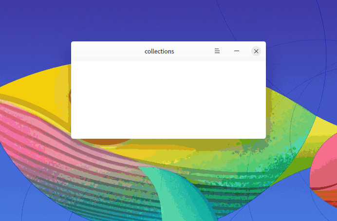
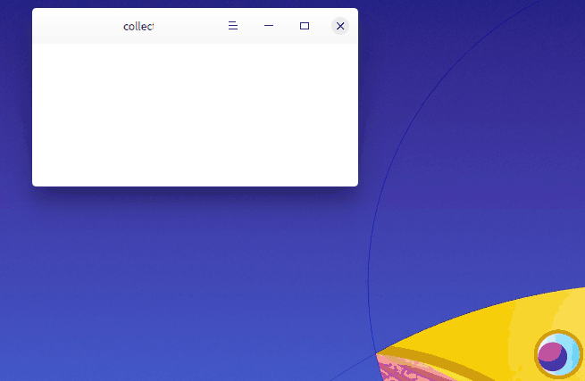
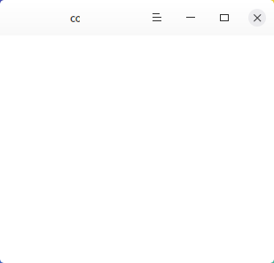

DWindowManagerHelper Class
class Dtk::Gui::DWindowManagerHelper提供与窗口管理器交互的接口，同 DPlatformWindowHandle 依赖 dxcb 插件. More...
| Header: | #include <DWindowManagerHelper> |
Public Types
| enum | MotifFunction { FUNC_RESIZE, FUNC_MOVE, FUNC_MINIMIZE, FUNC_MAXIMIZE, FUNC_CLOSE, FUNC_ALL } |
Properties
- hasBlurWindow : const bool
- hasComposite : const bool
- hasNoTitlebar : const bool
- hasWallpaperEffect : const bool
Public Functions
| QVector<quint32> | allWindowIdList() const |
| QVector<quint32> | currentWorkspaceWindowIdList() const |
| QList<Dtk::Gui::DForeignWindow *> | currentWorkspaceWindows() const |
| bool | hasBlurWindow() const |
| bool | hasComposite() const |
| bool | hasNoTitlebar() const |
| bool | hasWallpaperEffect() const |
| quint32 | windowFromPoint(const QPoint &p) |
| int | windowManagerName() const |
| QString | windowManagerNameString() const |
Signals
| void | hasBlurWindowChanged() |
| void | hasCompositeChanged() |
| void | hasNoTitlebarChanged() |
| void | hasWallpaperEffectChanged() |
| void | windowListChanged() |
| void | windowManagerChanged() |
| void | windowMotifWMHintsChanged(quint32 winId) |
Static Public Members
| int | getMotifDecorations(const QWindow *) |
| int | getMotifFunctions(const QWindow *) |
| Dtk::Gui::DWindowManagerHelper * | instance() |
| void | popupSystemWindowMenu(const QWindow *window) |
| void | setMotifDecorations(const QWindow *window, int hints) |
| int | setMotifDecorations(const QWindow *, int, bool) |
| void | setMotifFunctions(const QWindow *window, int hints) |
| int | setMotifFunctions(const QWindow *, int, bool) |
| void | setWmClassName(const QByteArray &name) |
| void | setWmWindowTypes(QWindow *window, int types) |
Protected Functions
| DWindowManagerHelper(QObject *parent = 0) |
Detailed Description
dxcb 插件抽象出所有需要和X11平台交互的接口以供上层调用，DTK 使用插件中提供的接口再 次封装提供给应用程序使用，从设计角度讲，DTK库中不应该直接使用任何跟平台相关的接口 （如：X11、Wayland、Windows），在这样的结构支撑下，在一个新的平台上，只需要提供和 dxcb 同样的接口，DTK应用即可无缝迁移。
See also dxcb插件, Dtk::Widget::DApplication::loadDXcbPlugin, Dtk::Widget::DApplication::isDXcbPlatform, and Dtk::Widget::DPlatformWindowHandle.
Member Type Documentation
enum DWindowManagerHelper::MotifFunction
MotifFunction::MotifFunction 窗口管理器对窗口所能控制的行为
| Constant | Value | Description |
|---|---|---|
Dtk::Gui::DWindowManagerHelper::FUNC_RESIZE | (1L << 1) | 控制窗口大小。如果存在此标志，则窗口管理器可以改变窗口大小（如使用鼠标拖拽窗口边缘）， 否则无法通过外部行为调整窗口大小。DMainWindow w; w.resize(400, 200); w.show(); DWindowManagerHelper::setMotifFunctions(w.windowHandle(), DWindowManagerHelper::FUNC_RESIZE, false); |

Note: 普通窗口默认存在此标志，对于 Qt::Popup 和 Qt::BypassWindowManagerHint 类型的窗口，不受此标志位影响
Note: 设置此标志后也会影响窗口标题栏对应功能入口的状态
Note: 对于使用系统标题栏的窗口，此功能和具体窗口管理器实现相关，deepin-wm 中设置 此标志无效。
| Constant | Value | Description |
|---|---|---|
Dtk::Gui::DWindowManagerHelper::FUNC_MOVE | (1L << 2) | 控制窗口位置。如果存在此标志，则窗口管理器可以移动窗口（如使用鼠标拖动标题栏），否则 无法通过外部行为移动窗口位置。DWindowManagerHelper::setMotifFunctions(w.windowHandle(), DWindowManagerHelper::FUNC_MOVE, false); |

| Constant | Value | Description |
|---|---|---|
Dtk::Gui::DWindowManagerHelper::FUNC_MINIMIZE | (1L << 3) | 最小化窗口。如果存在此标志，则窗口可以被最小化（如点击标题栏的最小化按钮），否则无法 通过外部行为最小化窗口。DWindowManagerHelper::setMotifFunctions(w.windowHandle(), DWindowManagerHelper::FUNC_MINIMIZE, false); |
Note: 设置此标志后也会影响窗口标题栏对应功能入口的状态
| Constant | Value | Description |
|---|---|---|
Dtk::Gui::DWindowManagerHelper::FUNC_MAXIMIZE | (1L << 4) | 最大化窗口。如果存在此标志，则窗口可以被最大化（如点击标题栏的最大化按钮），否则无法 通过外部行为最大化窗口。DWindowManagerHelper::setMotifFunctions(w.windowHandle(), DWindowManagerHelper::FUNC_MAXIMIZE, false); |
Note: 设置此标志后也会影响窗口标题栏对应功能入口的状态
| Constant | Value | Description |
|---|---|---|
Dtk::Gui::DWindowManagerHelper::FUNC_CLOSE | (1L << 5) | 关闭窗口。如果存在此标志，则窗口可以被关闭（如点击标题栏的关闭按钮或使用Alt+F4快捷键）， 否则无法通过外部行为关闭窗口。DWindowManagerHelper::setMotifFunctions(w.windowHandle(), DWindowManagerHelper::FUNC_CLOSE, false); |
Note: 设置此标志后也会影响窗口标题栏对应功能入口的状态
| Constant | Value | Description |
|---|---|---|
Dtk::Gui::DWindowManagerHelper::FUNC_ALL | FUNC_RESIZE | FUNC_MOVE | FUNC_MINIMIZE | FUNC_MAXIMIZE | FUNC_CLOSE | 所有功能性行为 |
See also Dtk::Gui::DPlatformHandle::enableDXcbForWindow and Dtk::Gui::DPlatformHandle::isEnabledDXcb.
Property Documentation
hasBlurWindow : const bool
窗口管理器是否支持窗口背景模糊特效
Note: 在 dxcb 插件中目前只支持 deepin-wm 和 kwin 这两种窗管的模糊特效
Note: 只读
Access functions:
| bool | hasBlurWindow() const |
Notifier signal:
| void | hasBlurWindowChanged() |
hasComposite : const bool
窗口管理器是否支持混成效果。如果不支持混成，则表示所有窗口的背景都不能透明， 随之而来也不会有窗口阴影等效果，不规则窗口的边缘也会存在锯齿。
Note: 只读
Access functions:
| bool | hasComposite() const |
Notifier signal:
| void | hasCompositeChanged() |
hasNoTitlebar : const bool
窗口管理器是否支持隐藏窗口标题栏。如果支持，则 DPlatformWindowHandle::enableDXcbForWindow 会优先使用此方法支持自定义窗口标题栏。
Note: 只读
Access functions:
| bool | hasNoTitlebar() const |
Notifier signal:
| void | hasNoTitlebarChanged() |
See also Dtk::Gui::DPlatformHandle::setEnabledNoTitlebarForWindow.
hasWallpaperEffect : const bool
窗口管理器是否支持窗口背景特效绘制。如果支持，则 绘制背景到透明窗口 会使用此方法开启特效窗口壁纸背景绘制。
Note: 只读
Access functions:
| bool | hasWallpaperEffect() const |
Notifier signal:
| void | hasWallpaperEffectChanged() |
See also hasWallpaperEffectChanged().
Member Function Documentation
[protected] DWindowManagerHelper::DWindowManagerHelper(QObject *parent = 0)
DWindowManagerHelper::DWindowManagerHelper 不允许直接实例化此对象 parent
See also DWindowManagerHelper::instance.
[signal] void DWindowManagerHelper::hasBlurWindowChanged()
信号会在 hasBlurWindow 属性的值改变时被发送.
Note: Notifier signal for property hasBlurWindow.
[signal] void DWindowManagerHelper::hasCompositeChanged()
信号会在 hasComposite 属性的值改变时被发送.
Note: Notifier signal for property hasComposite.
[signal] void DWindowManagerHelper::hasNoTitlebarChanged()
信号会在 hasNoTitlebar 属性的值改变时被发送.
Note: Notifier signal for property hasNoTitlebar.
[signal] void DWindowManagerHelper::hasWallpaperEffectChanged()
信号会在 hasWallpaperEffect 属性的值改变时被发送.
Note: Notifier signal for property hasWallpaperEffect.
[signal] void DWindowManagerHelper::windowListChanged()
信号会在当前环境本地窗口列表变化时被发送。包含打开新窗口、关闭窗口、改变窗口的 层叠顺序.
[signal] void DWindowManagerHelper::windowManagerChanged()
信号会在当前环境窗口管理器变化时被发送.
[signal] void DWindowManagerHelper::windowMotifWMHintsChanged(quint32 winId)
信号会在窗口功能或修饰标志改变时被发送.
winId 窗口id
Note: 只对当前应用程序中的窗口有效
QVector<quint32> DWindowManagerHelper::allWindowIdList() const
DWindowManagerHelper::allWindowIdList Returns 返回当前环境所有本地窗口的窗口id列表
Note: 顺序和窗口层叠顺序相关，显示越靠下层的窗口在列表中顺序越靠前
See also DWindowManagerHelper::currentWorkspaceWindowIdList.
QVector<quint32> DWindowManagerHelper::currentWorkspaceWindowIdList() const
DWindowManagerHelper::currentWorkspaceWindowIdList Returns 返回当前工作区所有本地窗口的窗口id列表
Note: 顺序和窗口层叠顺序相关，显示越靠下层的窗口在列表中顺序越靠前
See also DWindowManagerHelper::allWindowIdList.
QList<Dtk::Gui::DForeignWindow *> DWindowManagerHelper::currentWorkspaceWindows() const
DWindowManagerHelper::currentWorkspaceWindowIdList Returns 返回当前工作区所有本地窗口对象列表。和 currentWorkspaceWindowIdList 类似，只不过自动通过窗口id创建了 DForeignWindow 对象
Note: 顺序和窗口层叠顺序相关，显示越靠下层的窗口在列表中顺序越靠前
Note: 列表中对象的生命周期由 DForeignWindow 负责
Warning: 此列表中不包含由当前应用创建的窗口
See also DWindowManagerHelper::currentWorkspaceWindowIdList and DForeignWindow::fromWinId.
[static] int DWindowManagerHelper::getMotifDecorations(const QWindow *)
DWindowManagerHelper::getMotifFunctions window Returns 返回窗口当前的修饰标志
[static] int DWindowManagerHelper::getMotifFunctions(const QWindow *)
DWindowManagerHelper::getMotifFunctions window Returns 返回窗口当前的功能标志
bool DWindowManagerHelper::hasBlurWindow() const
DWindowManagerHelper::hasBlurWindow Returns 如果当前窗口管理器支持窗口背景模糊特效则返回 true，否则返回 false
Note: Getter function for property hasBlurWindow.
bool DWindowManagerHelper::hasComposite() const
DWindowManagerHelper::hasComposite Returns 如果当前窗口管理器支持混成则返回 true，否则返回 false
Note: Getter function for property hasComposite.
bool DWindowManagerHelper::hasNoTitlebar() const
DWindowManagerHelper::hasNoTitlebar Returns 如果窗口管理器当前支持设置隐藏窗口标题栏则返回 true，否则返回 false
Note: Getter function for property hasNoTitlebar.
bool DWindowManagerHelper::hasWallpaperEffect() const
DWindowManagerHelper::hasWallpaperEffect Returns 如果窗口管理器当前支持背景图片特效绘制返回 true，否则返回 false
Note: Getter function for property hasWallpaperEffect.
[static] Dtk::Gui::DWindowManagerHelper *DWindowManagerHelper::instance()
DWindowManagerHelper::instance DWindowManagerHelper 的单例对象，使用 Q_GLOBAL_STATIC 定义，在第一次调用时实例化。 Returns
[static] void DWindowManagerHelper::popupSystemWindowMenu(const QWindow *window)
DWindowManagerHelper::popupSystemWindowMenu 显示窗口管理器对窗口的菜单，和有边框的窗口在标题栏上点击鼠标右键弹出的菜单内容一致。 在 DMainWindow 的标题栏上点击鼠标右键会调用此函数打开系统菜单：

window
[static] void DWindowManagerHelper::setMotifDecorations(const QWindow *window, int hints)
DWindowManagerHelper::setMotifDecorations 设置窗口的修饰性标志，会覆盖之前的设置 window hints
[static] int DWindowManagerHelper::setMotifDecorations(const QWindow *, int, bool)
DWindowManagerHelper::setMotifFunctions 设置窗口某些标志位的开启状态，不影响其它标志位 window hints 要设置的标志位 on 如果值为 true 则开启标志，否则关闭 Returns 返回设置后的窗口标志
[static] void DWindowManagerHelper::setMotifFunctions(const QWindow *window, int hints)
DWindowManagerHelper::setMotifFunctions 设置窗口的功能性标志，会覆盖之前的设置 window hints
[static] int DWindowManagerHelper::setMotifFunctions(const QWindow *, int, bool)
DWindowManagerHelper::setMotifFunctions 设置窗口某些标志位的开启状态，不影响其它标志位 window hints 要设置的标志位 on 如果值为 true 则开启标志，否则关闭 Returns 返回设置后的窗口标志
[static] void DWindowManagerHelper::setWmClassName(const QByteArray &name)
DWindowManagerHelper::setWmClassName 设置x11环境上默认使用的wm class name，主要是在窗口创建时用于设置WM_CLASS窗口属性 name
Note: 如果值为空，Qt将在下次使用此值时根据程序名称再次初始化此值
See also QCoreApplication::applicationName.
[static] void DWindowManagerHelper::setWmWindowTypes(QWindow *window, int types)
DWindowManagerHelper::setWmWindowTypes 直接设置窗口管理器层级提供的窗口类型，如DesktopType和DockType类型也被 桌面环境需要，但是Qt自身并没有提供对应的设置接口 window types
quint32 DWindowManagerHelper::windowFromPoint(const QPoint &p)
DWindowManagerHelper::windowFromPoint Returns 返回 p 位置的窗口 Id，如果出错返回 0
Note: 可以通过 DForeignWindow::fromWinId 创建窗口对象
int DWindowManagerHelper::windowManagerName() const
DWindowManagerHelper::windowManagerName Returns 返回当前窗口管理器类型
See also DWindowManagerHelper::windowManagerNameString.
QString DWindowManagerHelper::windowManagerNameString() const
DWindowManagerHelper::windowManagerNameString Returns 返回窗口管理器名称。在X11平台上，此值为窗口管理器对应窗口的 _NET_WM_NAME 的值 _NET_SUPPORTING_WM_CHECK _NET_WM_NAME